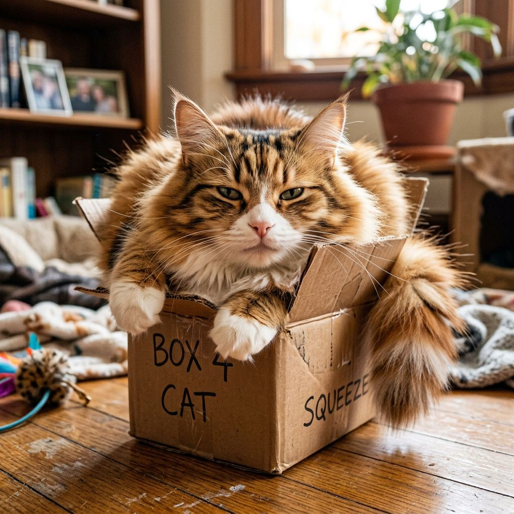
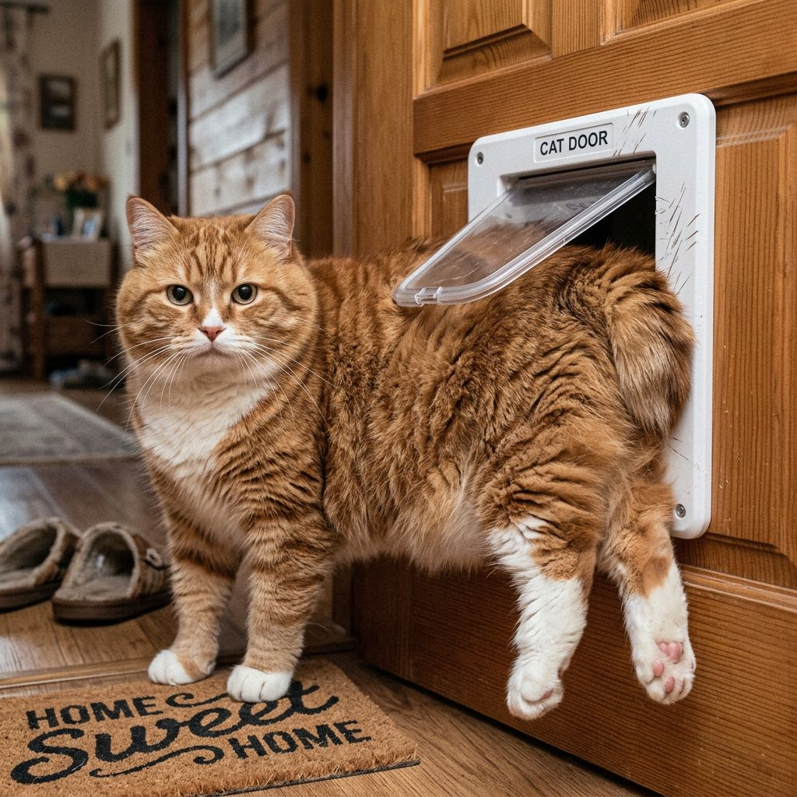
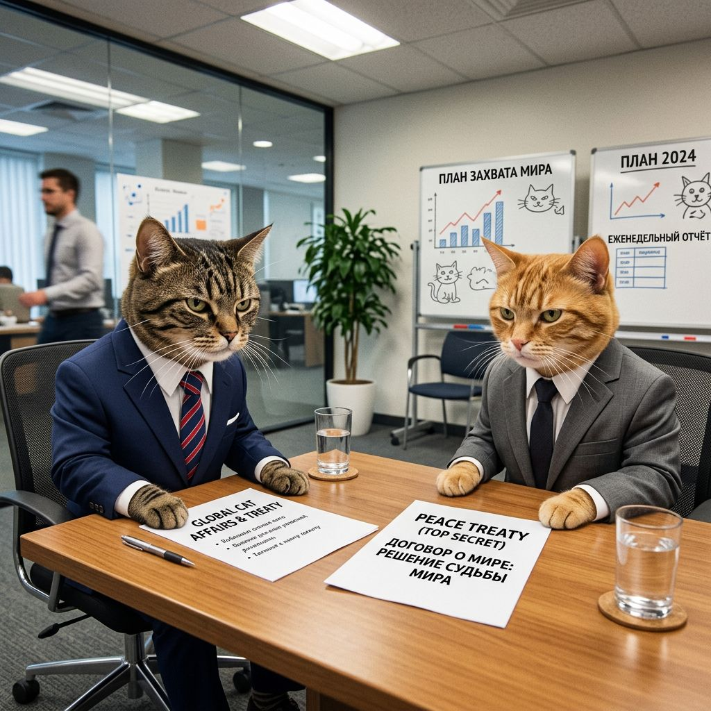

Новости
Наш корреспондент спит 16 часов в сутки, а остальные 8 — ест. Поэтому новости выходят редко, зато правдиво.
Кот застрял в коробке, из которой не хотел вылезать

Вид с места событий. Кот утверждает, что так и планировал.
Мем №2 · Рейтинг кота: 9 из 10

Спасательная операция продолжалась сорок минут. Кот вышел сам, когда мы перестали смотреть.
Мем №7 · Рейтинг кота: 10 из 10
Пострадавших нет. Пострадала только коробка — она теперь котом считается собственностью и защищена законом кота.
Переговоры между двумя котами завершились безрезультатно

Стороны обсудили дележку подоконника. Соглашение не достигнуто, потому что сторона А легла на документы.
Мем №6 · Рейтинг кота: 8 из 10

Комментарий наблюдателя: «Это не моя зона ответственности».
Мем №8 · Рейтинг кота: 9 из 10
Кот объявил голодовку, продлившуюся одиннадцать секунд

Миска была пуста целых три минуты. Мировая общественность не выдержала первой.
Мем №5 · Рейтинг кота: 10 из 10

Кот отдыхает после тяжёлого трудового дня. Трудовой день заключался в том, что он проснулся.
Мем №4 · Рейтинг кота: 7 из 10